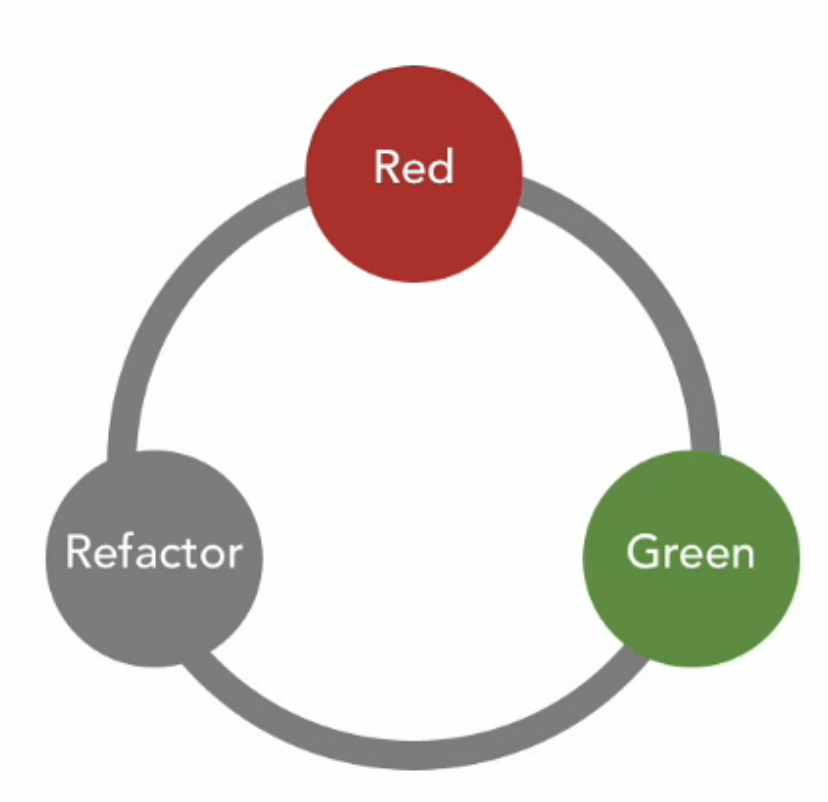

Practical TDD
Let's talk about some of the nitty-gritty aspects of TDD.
QDT Question Driven Talk:
- How can I write all my tests, when I don't even know all the implementation details?
- What makes a good unit test?
- How many tests should I have?
- How should I order my tests?
- How can I avoid code repetition within my tests?
TDD is the Socratic method, applied to coding!!!!
How can I write all my tests, when I don't even know all the implementation details?
A: Don't! Instead write them incrementally using the Fail-Pass-Refactor cycle.

What makes a good unit test?
A: A good test should verify that one logical path through a method works.
Unit tests should be in 1-to-1 corresponondence with logical paths.
DO's:
- Make sure every non-trivial method is tested
- EG: get_account_status() →
- test_get_account_status()
- For every branch of logic within each method, create
-
- test_withdraw_test_normal()
- test_withdraw_test_overdraft()
- test_withdraw_test_disallowed()
DONT's:
- No need to test trivial getters/setters
- Don't stack all the logical pathways into a single long test for the method being tested. Instead, split them up as above
How many tests should I have?
How should I order my tests?
DON'T !!!!!
Every unit test should be completely independent of every other unit test. You'll have to build-up any necessary objects and context to make that specific unit testable.
How can I avoid code repetition within my tests?
You should use fixtures.
FIXTURES are a platform agnostic concept (so just because Django fixtures are "bad", doesn't mean you should dismiss the concept entirely. They refer to a part of the code that is in charge of building up the objects and context that are needed to run a test or a sequence of tests, and (possibly) also the code that cleans up after each test.
In practice in xUnit frameworks fixtures run mostly inside:
- setUp()
- tearDown()
- setUpClass()
- tearDownClass()